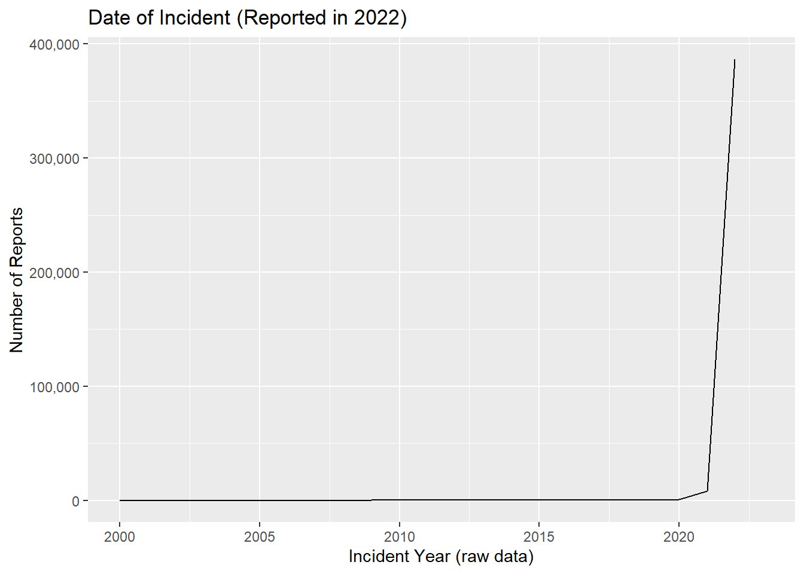
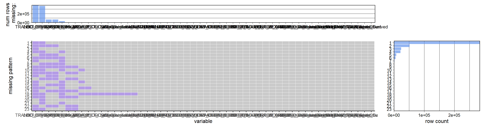
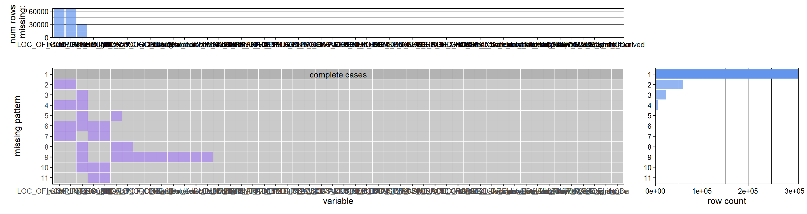
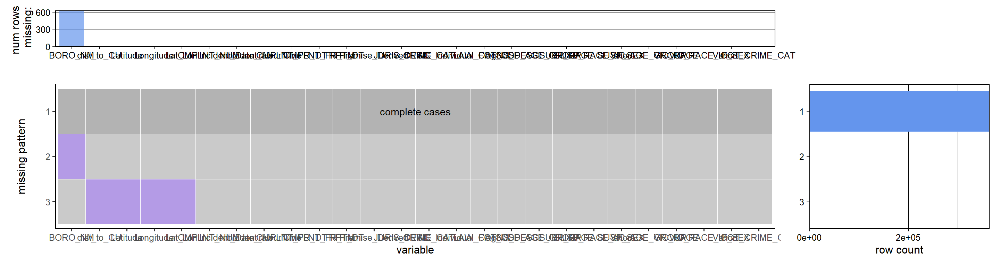

Chapter 3 Data
In this section we ingest the data and perform several cleaning operations to pre-process the data for use in the Results chapter. Please click the eye icon above to view the code, transformations, and required packages used in this project.
3.1 Source
As discussed in the Proposal section, the data for this project comes from published crime reports. NYC Open Data (NYC Office of Technology and Innovation (OTI)) in conjunction with New York City Police Department (NYPD) makes public safety data available for anyone online. In particular they publish Complaint Data which contains felony, misdemeanor, and violation crimes reported to the NYPD from 2006 till present.
Year-to-Date (YTD) (2022-01 to 2022-09): https://data.cityofnewyork.us/Public-Safety/NYPD-Complaint-Data-Current-Year-To-Date-/5uac-w243
The dataset contains mostly categorical variables and dates with each row indicating a crime/violation. As of the last update on October 19, 2022, the YTD Dataset contains 397K rows and 36 columns. A data dictionary is provided by NYC Open Data at the link above.
3.1.1 Content
“Complaint data” is a mixed set of records because it contains crimes (ex. robbery, rape, assault), parking violations, complaints of harassment, reports of abandoned animals, and more. In this script, we investigate, clean, and filter the data so that we can explor and answer our research questions.
As the link above indicates, there are two sets of data containing distinct records. A year-to-date dataset from 1/1/2022 to 9/30/2022 and a historic dataset containing records from 1/1/2006 to 12/31/2021. We are only using the the year-to-date data but can incorporate historic records in a future iteration of the analysis.
The following is a list of column names and their description. Not all fields are used for the analysis and some contain mostly blank values as we will show. As you may notice, most of the data is categorical but we will derive continuous variables through data and location fields.
S.No Column Name (Data Type): Description
- CMPLNT_NUM (text): Randomly generated persistent ID for each complaint
- ADDR_PCT_CD (text): The precinct in which the incident occurred
- BORO_NM (text): The name of the borough in which the incident occurred
- CMPLNT_FR_DT (DateTime): Exact date of occurrence for the reported event (or starting date of occurrence, if CMPLNT_TO_DT exists)
- CMPLNT_FR_TM (text): Exact time of occurrence for the reported event (or starting time of occurrence, if CMPLNT_TO_TM exists)
- CMPLNT_TO_DT (DateTime): Ending date of occurrence for the reported event, if exact time of occurrence is unknown
- CMPLNT_TO_TM (text): Ending time of occurrence for the reported event, if exact time of occurrence is unknown
- CRM_ATPT_CPTD_CD (text): Indicator of whether crime was successfully completed or attempted, but failed or was interrupted prematurely
- HADEVELOPT (text): Name of NYCHA housing development of occurrence, if applicable
- HOUSING_PSA (Number): Development Level CodeNumber
- JURISDICTION_CODE (Number): Jurisdiction responsible for incident. Either internal, like Police(0), Transit(1), and Housing(2); or external(3), like Correction, Port Authority, etc.
- JURIS_DESC (text): Description of the jurisdiction code
- KY_CD (Number): Three digit offense classification code
- LAW_CAT_CD (text): Level of offense: felony, misdemeanor, violation
- LOC_OF_OCCUR_DESC (text): Specific location of occurrence in or around the premises; inside, opposite of, front of, rear of
- OFNS_DESC (text): Description of offense corresponding with key code
- PARKS_NM (text): Name of NYC park, playground or greenspace of occurrence, if applicable (state parks are not included)
- PATROL_BORO (text): The name of the patrol borough in which the incident occurred
- PD_CD (Number): Three digit internal classification code (more granular than Key Code)
- PD_DESC (text): Description of internal classification corresponding with PD code (more granular than Offense Description)
- PREM_TYP_DESC (text): Specific description of premises; grocery store, residence, street, etc.
- RPT_DT (DateTime): Date event was reported to police
- STATION_NAME (text): Transit station name
- SUSP_AGE_GROUP (text): Suspect’s Age Group
- SUSP_RACE (text): Suspect’s Race Description
- SUSP_SEX (text): Suspect’s Sex Description
- TRANSIT_DISTRICT (Number): Transit district in which the offense occurred
- VIC_AGE_GROUP (text): Victim’s Age Group
- VIC_RACE (text): Victim’s Race Description
- VIC_SEX (text): Victim’s Sex Description
- X_COORD_CD (Number): X-coordinate for New York State Plane Coordinate System, Long Island Zone, NAD 83, units feet (FIPS 3104)
- Y_COORD_CD (Number): Y-coordinate for New York State Plane Coordinate System, Long Island Zone, NAD 83, units feet (FIPS 3104)
- Latitude (Number): Midblock Latitude coordinate for Global Coordinate System, WGS 1984, decimal degrees (EPSG 4326)
- Longitude (Number): Midblock Longitude coordinate for Global Coordinate System, WGS 1984, decimal degrees (EPSG 4326)
- LatLon (Location)
- New Georeferenced Column (Point)
3.1.2 Who Collects The Data
The data was collected and published by the NY Police Department (NYPD).
3.1.3 Format and Importation
OTI provides the data in 4 formats: 1) online table, 2) visualization, 3) CSV, and 4) API. The first two have limited functionality and customization so we will not use those versions. The API requires an account and authentication tokens. Given that the CSV for YTD data is not too large (140MB), it seems the easiest to work with. CSV is a format we are most familiar with and one that R handles well.
Is there a difference between CSV and API? Yes. Not in number of observations but in the columns. With the CSV, we get a total of 36 columns (listed above) but with the API we get a total of 41 columns.
Following are the columns that are present in the CSV data but not in the API data:
- New Georeferenced Column.
Following are the columns that are present in the API data but not in the CSV data:
- :@computed_region_92fq_4b7q
- :@computed_region_yeji_bk3q
- :@computed_region_efsh_h5xi
- geocoded_column
- :@computed_region_sbqj_enih
- :@computed_region_f5dn_yrer
For our purposes, the data in the CSV is sufficient and easy to use.
3.1.4 Data Updates
This dataset was first made public on 11/1/2018. It is updated quarterly. It appears that the metadata is updated more frequently but it is not clear what changes are incorporated as there could be several updates made in Oct 2022 but the data will only contain records up to the prior month end of Sept 2022.
3.2 Data Transformation and Cleaning
This .Rmd file contains the following sections:
Data Loading: To show data was ingested into the environment Bucketing: To combine values in a derived field for simplifying graphs Date Transformations: To make strings into dates and extract time information Derived Geo Fields: To calculate distances between points -Derive Other Fields: To derived other fields and perform minor cleaning operations
We then filter our data frame to relevant records, and then select key fields for ease-of-use. “Relevant” records are defined by time frame and crime category explained more below.
There is also a section at the end on missing data.
3.2.2 Bucket Crime Types
This code chunk creates a new field to simplify the crime category to reduce the number of unique values for visualization purposes. We cut down from over 60 values to 5 and will show more in the Results chapter.
Note: there are 5 values with missing Offense category. Since they have valid PD_CD (Crime ID) and PD_DESC, we can impute these values from other columns with the same PD_CD. -Two values are for obscenity - 594 PD_CD (categorized as sex crimes) -One values for crime pos weap - 797 PD_CD (categorized as major violent crimes/dangerous weapons) -One value for “place false bomb” - 648 PD_CD (categorized as other) -One value for “noise” - 872 PD_CD (categorized as other)
3.2.3 Date/Time Transformation
Per the data dictionary, there is both a “from_date” and a “to_date” when the exact time is unknown. There is also a “report date” for when the crime was reported. Using these fields in conjunction, we can derive a new clean field that is the assumed date of the incident. Assumptions: When there is a range, we will use the “from” date only because is populated well and will on average approximate the frequency of crime over time; when from_date is null, we will use the report_date (does not occur often, see Missing Data Analysis below).
3.2.4 Geo-Location Fields
This section uses a new package, geosphere, to calcluate the distance between two points in Lat/Long format. Here we are finding the distance from each crime to the center of the main Columbia campus for use later.
3.2.5 Other Derivations
In this section, we add additional fields for more classification (explained more in the Results section), reclassify “null” to Unknown in specific instances, shorten values for ease-of-use, and combine information from several premise columns into one to simplify category values.
3.3 Filter Table for Relevance
The raw data only contains crimes that were reported in 2022 even if they took place earlier. As we will show below, this create a bias in the time series and this section creates a new data frame to filter out old records (as defined by derived field above; before 1/1/2022). We also filter for only “relevant” crimes - i.e. excluding parking violations, noise compliants (those in the “Other” category)

From this we see that there is a large drop off in historic reports. This make sense as it is more likely that someone would report a crime in the same year that it occurs. Although NYPD allows people to report crimes that occurred in 2020, there will be much fewer of them reported in 2022. If we wanted to use data prior to 2022 we should include the old crime reports for prior years. Also there are some quality issues with historic data as we see very old crimes (year 1500) which indicate some human error or a record-keeping issue.
After filtering the data, we have a cleaner data frame and more sensical results as we will show in the next chapter. Overall, there are not many records that are excluded (from 396,978 to 364,298).
3.4 Select and Rename Columns
This section simply chooses fields that are used in our analysis to simplify and reduce the overall size of the working data frame. We also make some character fields factors and order them by frequency.
3.5 Missing Value Analysis
First let us look at the raw data to see what things look like originally. We can categorize nulls as real (i.e. true NA) vs “artificial” (i.e. the word “null” in the raw data or similar). Then we can show which fields and what percent of each (out of the 300k rows) may have an issue.
## # A tibble: 23 × 5
## field Real_Null Artificial_Null Total Percent
## <chr> <dbl> <dbl> <dbl> <dbl>
## 1 HADEVELOPT 0 395756 395756 99.7
## 2 PARKS_NM 0 394295 394295 99.3
## 3 STATION_NAME 0 388677 388677 97.9
## 4 TRANSIT_DISTRICT 388677 0 388677 97.9
## 5 HOUSING_PSA 371512 0 371512 93.6
## 6 Inside_Outside 66081 0 66081 16.6
## 7 LOC_OF_OCCUR_DESC 66081 0 66081 16.6
## 8 CMPLNT_TO_DT 29393 0 29393 7.4
## 9 CMPLNT_TO_TM 0 29276 29276 7.37
## 10 BORO_NM 657 0 657 0.17
## 11 Borough_short 657 0 657 0.17
## 12 PREM_TYP_DESC 0 476 476 0.12
## 13 PD_CD 440 0 440 0.11
## 14 PD_DESC 0 440 440 0.11
## 15 ADDR_PCT_CD 20 0 20 0.01
## 16 Lat_Lon 9 0 9 0
## 17 Latitude 9 0 9 0
## 18 Longitude 9 0 9 0
## 19 New Georeferenced Column 9 0 9 0
## 20 X_COORD_CD 9 0 9 0
## 21 Y_COORD_CD 9 0 9 0
## 22 OFNS_DESC 0 5 5 0
## 23 PATROL_BORO 0 2 2 0So we see we have mostly missing data for 5 fields. Location and its derived field is also missing a good portion which is likely due to masking for privacy reasons per the data source notes found at the NY Open Data Link.
Let us look at missing patterns now: Raw Data, All Columns:  Raw Data, All Columns (Except Transit_District and Housing_PSA):  These charts are hard to read given the number of columns but it shows that most data is actually populated very well as we saw above. There are two problem fields causing all of the real nulls but we can re-graph this without those and see that complete cases are at the top. However, this is still not accurate because there are string values in the data that say “(null)” or “Unknown” which would appear as populated. In any case, we do not need to clean and evaluate all columns, so let us work off of the new, filtered dataset we created in a prior section (see below). Side Note: We initially noticed the Complaint_Num was null often but this was due to it containing alphanumeric characters and R loading it as a number only. It has been corrected and serves as a primary key for the data frame.
 The filtered data (relevant columns and rows only) is populated very well and this dataset accounts for improperly coded values where “(null)” will appear as NA properly. We have re-coded some values to “Unknown” as that value appears in the raw data is is reasonable (e.g. if the suspect was not found, we have no information on them and can say Unknown). We see there are a few blanks for Borough and lat/long and thus the related derived field, but otherwise we have a good data frame to use in the next chapter.